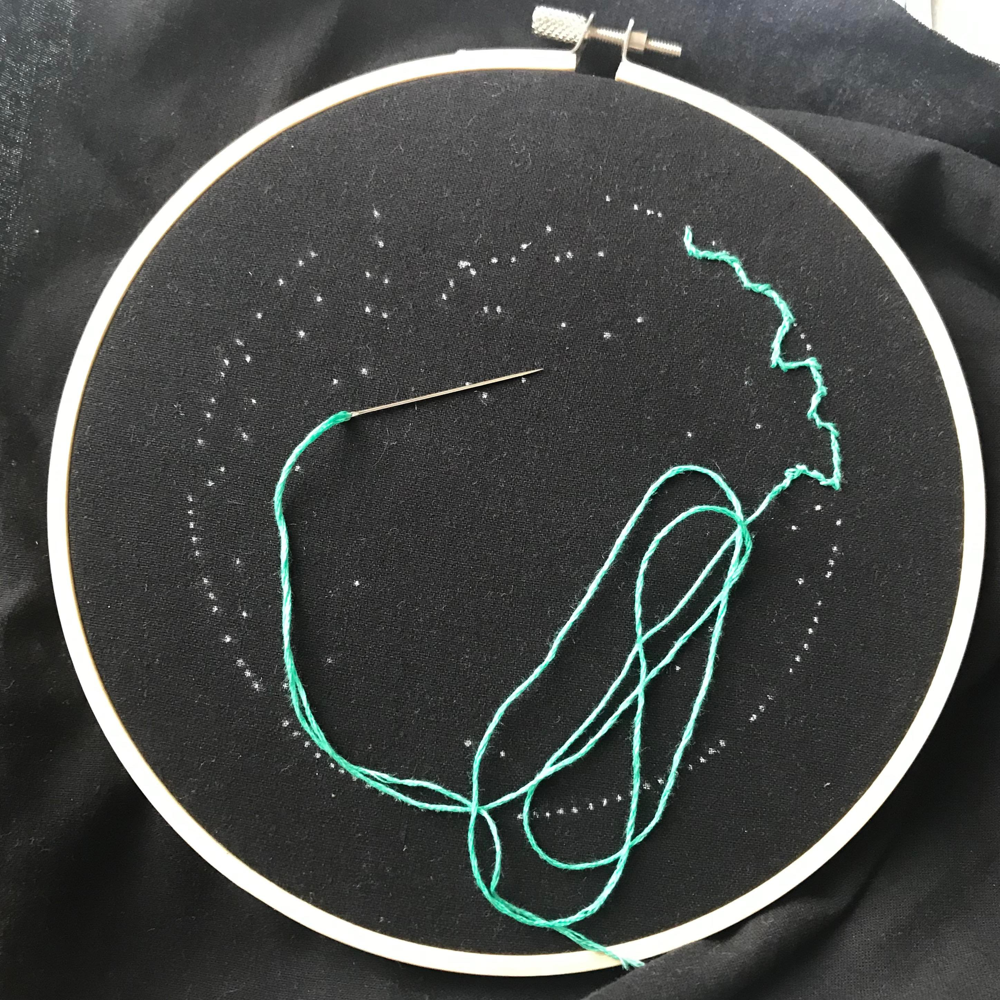
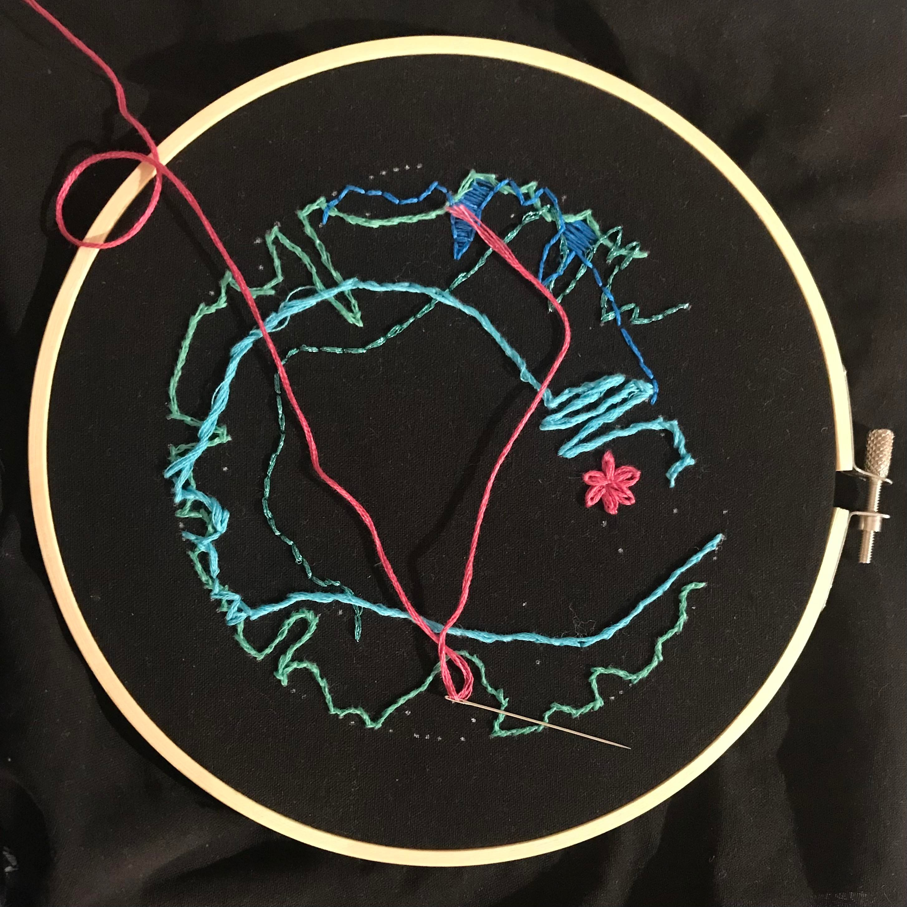
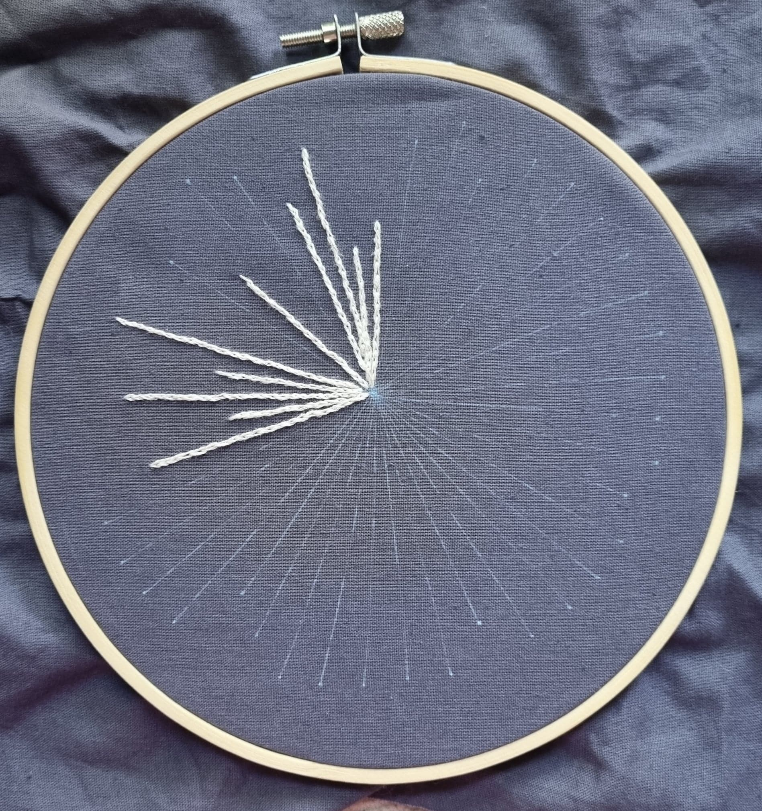
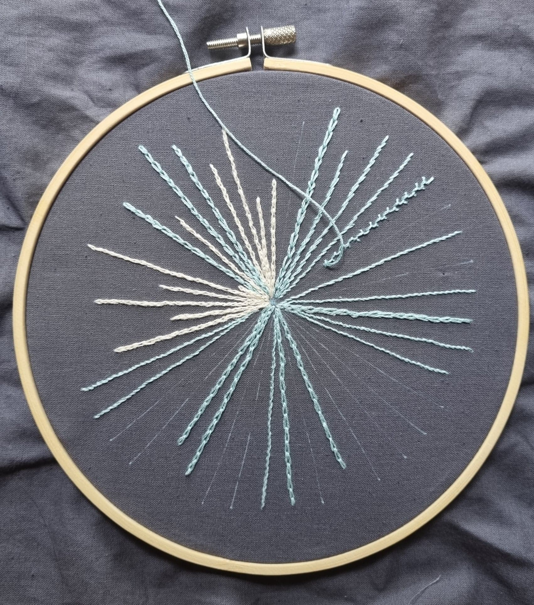
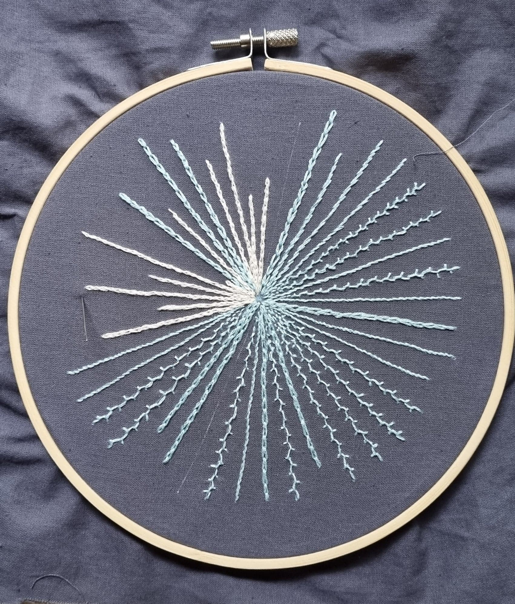
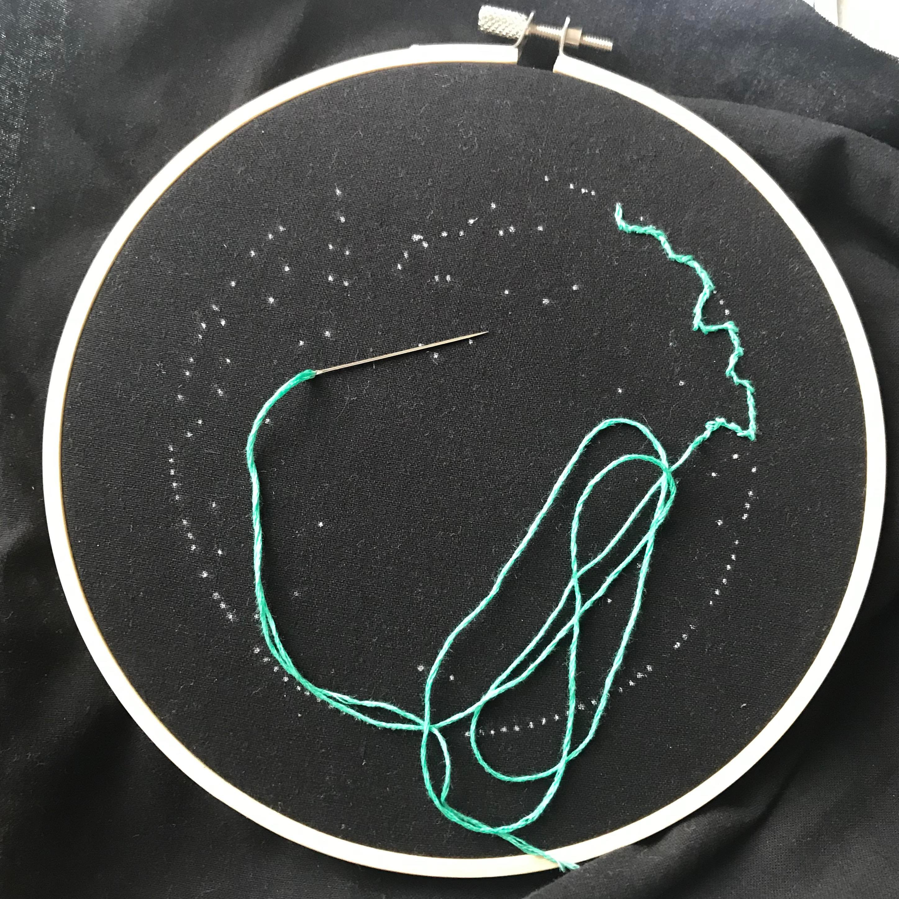
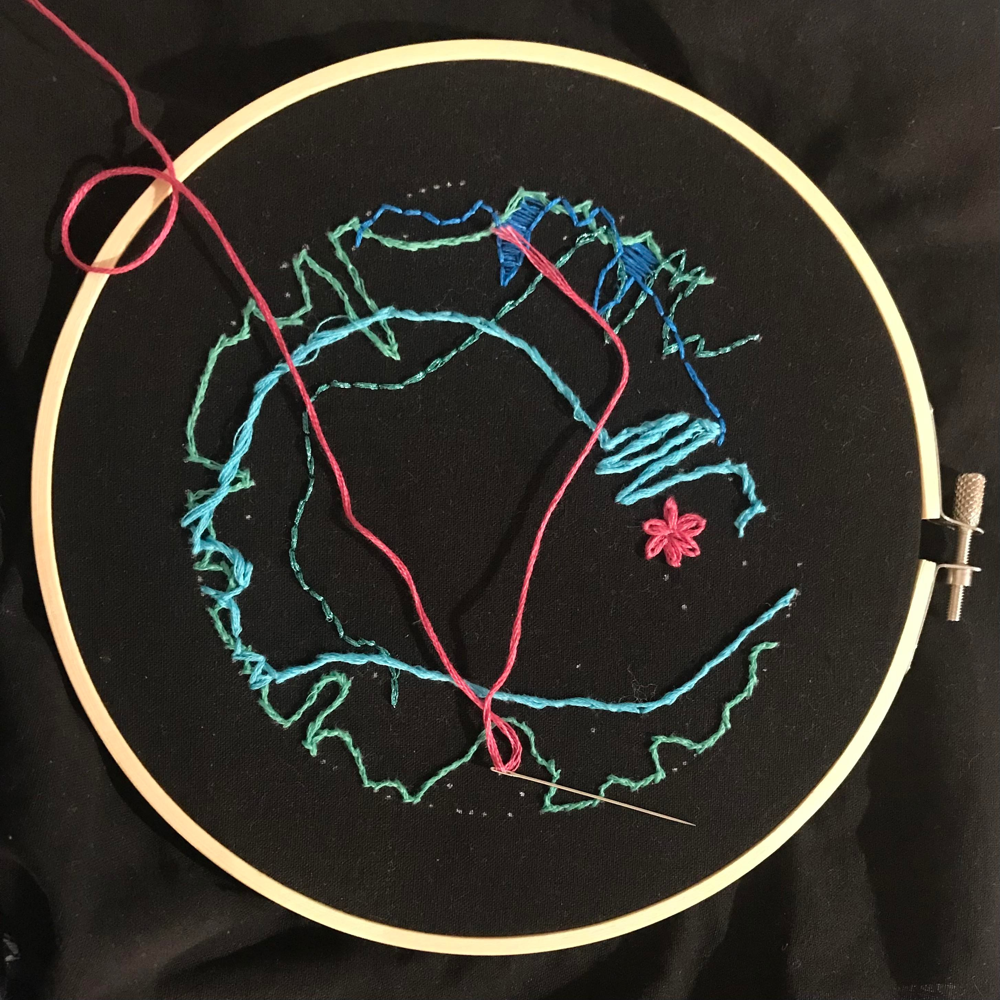
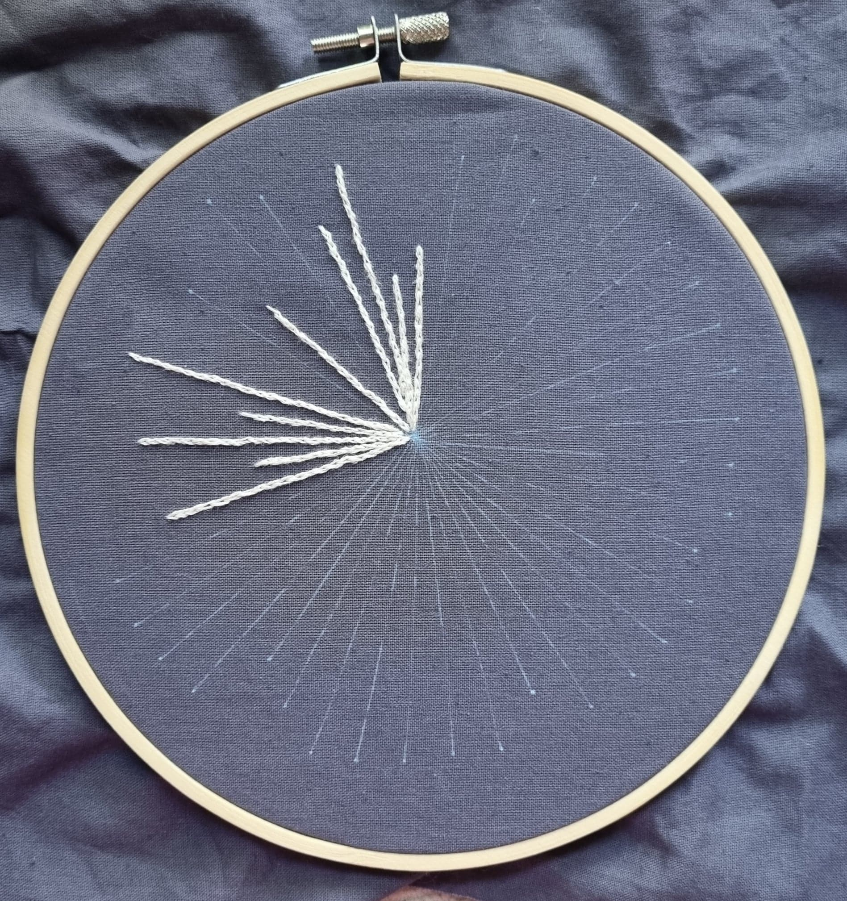
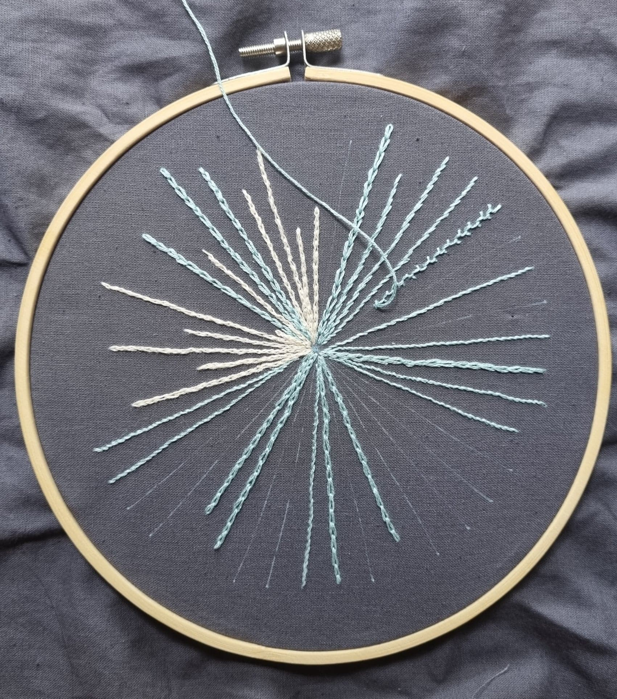
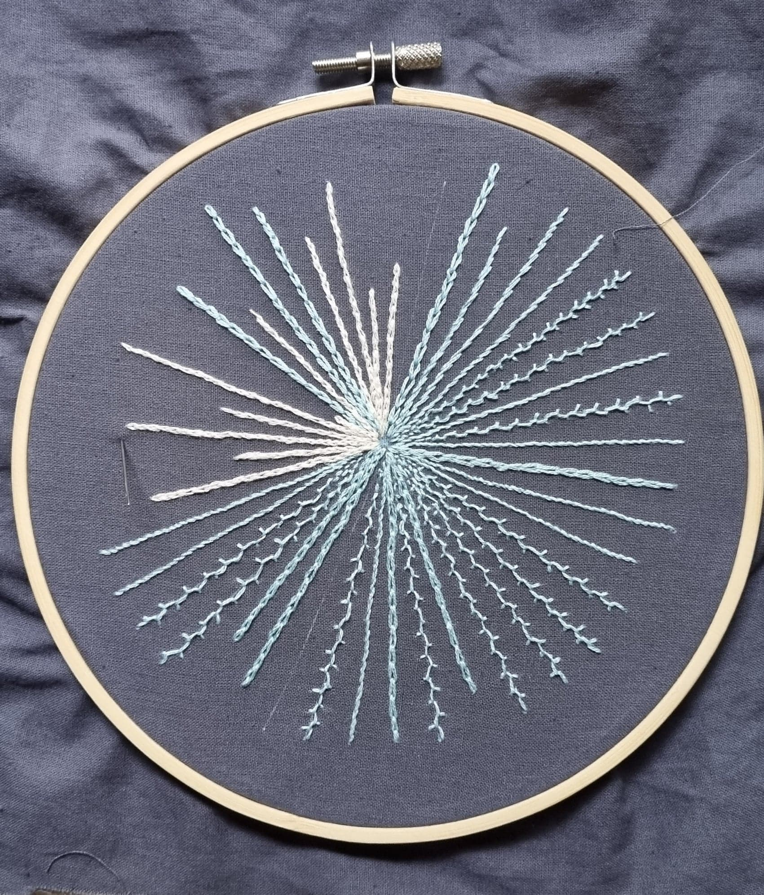

Step 2: Transferring the Pattern
Once you’ve got your pattern and some embroidery materials (an embroidery hoop, some fabric, a needle, some thread), it's time to transfer the data onto the fabric. There are many ways patterns can be transferred. Here we detail the options that worked well for us:
Fabric Print Method:
1. Cut a piece of freezer paper to the size of an A4 page.
.jpg)
2. Put it shiny side down on your fabric and iron lightly until it sticks.
3. Cut out the reinforced section of fabric. Load into an inkjet printer. Print
.jpg)
.jpg)
Transfer Paper Method:
This method is particularly useful if you’re using dark fabric that's hard to print on. The YouTube channel Lolli and Grace provides a useful tutorial on how to do this. We’ve also made a list of the steps you can follow.
Lolli and Grace video resource: https://www.youtube.com/watch?v=7U4t7DEWBYI
1. Print out your PDF data pattern to the same size as your embroidery hoop
2. Secure your fabric in the hoop and place with the fabric against a flat surface.
3. Cut a piece of white transfer paper and your pattern to the size of your embroidery hoop and tape inside.
4. Use a pen to firmly trace all the dots, this will transfer them onto the fabric.
5. Remove the paper and go over the dots in a white gel pen to make the more visible.
Tip: If your pattern isn’t too complicated you can also try taping the pattern to the paper and drawing the dots by poking through the paper with a white gel pen!
.jpg)
.jpg) 








